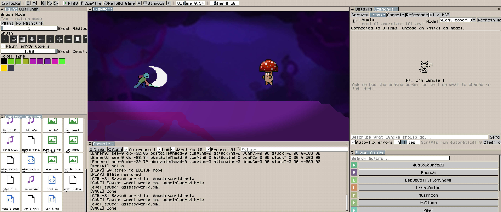

MINI
Small games
One level, a few Actors and a script are enough to get something playable. The editor does the rest.
GAME ENGINE / SCRIPTABLE / PIXEL-FIRST
Lynx is a game engine for everything from small games to massive open worlds with dynamic voxel destruction. It is built around Actors, components, levels, and lightweight JavaScript scripting powered by QuickJS. No C++ required to make a game.


NO C++ REQUIRED
The engine core is written in C++, but you are never forced to write C++ yourself. Gameplay lives in JavaScript, and levels, voxels and Actors are built from the editor. C++ stays optional, for the day you want to add your own components.
MADE FOR ANY SCALE
One level, a few Actors and a script are enough to get something playable. The editor does the rest.
Paint large voxel worlds in the editor, then fill them with Actors, audio and scripted behavior.
Voxels can be destroyed while the game runs. Each type in voxels.json defines its collision, emissive behavior and destruction rules.
THE EDITOR

THE ENGINE
Actor objects represent things in the world. They own a transform, an identifier, scripts, and can receive components.
The engine uses an EnTT-based ECS registry. Components have their own lifecycle and stay separate from the public engine API.
A Level contains active Actors. Spawns and destruction can be deferred while the engine is iterating safely.
Animations, blend spaces, state transitions, frame events, parameters, and triggers are available from the native C++ systems.
Audio sources can be attached to Actors, moved through the world, looped, and configured with volume, pitch, and spatialization.
Voxel types are described in voxels.json, including colors, collision flags, emissive behavior, and destruction rules.
WHY JAVASCRIPT?
The scripting layer stays deliberately small: a JavaScript file defines behavior and receives its owning Actor through the global parent.
The same file can be attached to multiple Actors. Its source is compiled once, while each attachment keeps its own execution environment and state.
// scripts/Player.js function BeginPlay() { parent.position = vec3(5, 0, 0); } function Update(dt) { if (Input.held("move_x")) { parent.position.x += Input.axis("move_x") * 5 * dt; } }
AT A GLANCE
STANDING ON
DOCUMENTATION
The JavaScript section explains the instance model, lifecycle, Actor properties, transforms, levels, input, time control, reflection, hot reload, and common gameplay patterns.
Open Complete Guide HRL
HRL Dear ImGui
Dear ImGui